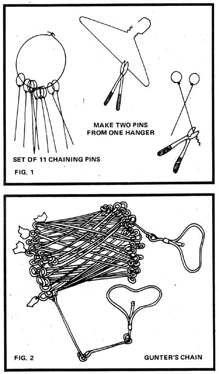
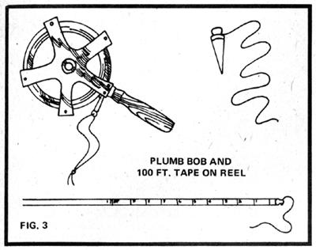
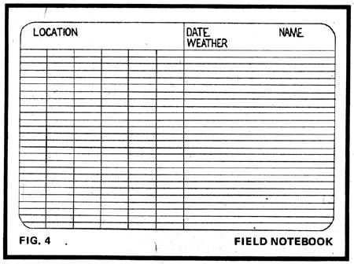
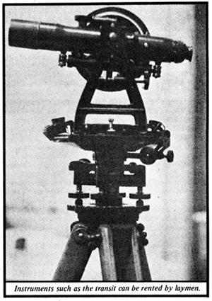
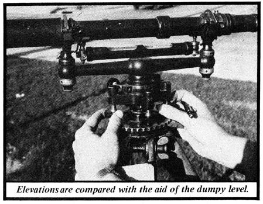
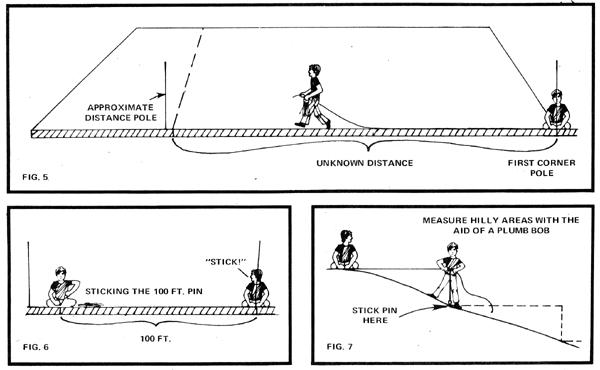

Like most of MOTHER's readers, you're probably into doing things on your own. Some skills, though, are just too complex and specialized to be realistic propositions for the lay person and most likely you'd expect surveying to be one of them. Not at all! A mastery of the basic techniques is within your reach, and can save you time, money, and labor on your land.
Perhaps you haven't yet found your homestead and in that case your first real life encounter with surveying may occur when you size up a tract for possible purchase. If there's no survey on record or none that describes the plot's boundaries in detail you can't be sure, for example, whether that desirable stream is on "your" place or the adjoining property. Only actual measurement of the acreage you're considering, on the basis of the description in the deed, will show exactly what you're being offered. (See Chapter 8 of Les Scher's Finding and Buying Your Place in the Country for an attorney's view of this subject. If the exact course of a property line makes a crucial difference to the value of a tract you desire, you%I probably want a professional survey but your own preliminary work should at least help you decide whether or not you want to continue negotiations MOTHER.)
In some states, land transactions are lawful only if a survey recent enough to be considered legally binding is on file with the county recorder. You may not be allowed to carry out this work yourself, since many jurisdictions recognize only licensed surveyors' reports for official purposes. A phone call or letter to the nearest Government Land Office will tell you whether or not this is true in your case. Even if it is, however, an authorized professional's signature on your field notes will sometimes be accepted. Talk to your area surveyor's office about this possibility.
If you're interested only in surveying inside your property line, of course, the joy of mapping your kingdom is yours without hassle. And it is a joy. An examination of your tract with rented or borrowed instruments could be your first step toward a new relationship with the land the true understanding of all its rills and byways that comes only from close inspection. In addition, your findings will help you lay out your homestead sensibly and give you accurate information on which to base decisions about building, gardening, farming, landscaping, etc., projects of all kinds.
Precise land surveys depend on three fundamentals:
[1] the determination of distances,
[2] the determination of elevation, and
[3] the measurement of angles. Which of the three operations you perform first or at all depends on the particular surveying problem at hand. In the following sections I'll describe all three fundamentals of surveying as they might be carried out on the homestead. The more complex instruments needed for such work can be borrowed or rented from colleges, state agriculture departments, or blueprint companies (which supply professional surveyors). Other items can be bought inexpensively or improvised at home.
THE MEASUREMENT OF DISTANCE
To determine distances accurately when fencing, for example, or laying out garden lots of equal area you'll need the following equipment:
[1] A set of 11 chaining pins. These can be made from coat hanger wire (see Fig. 1).
[2] A 100 foot steel or metallic woven tape. George Washington did his surveying with a chain probably, a 66 foot Gunter's chain, like the one shown in Fig. 2 and the modern version (Fig. 3) is, accordingly, called a steel chaining tape. You might substitute 100 feet of rope marked off in feet, with the first foot divided into tenths. Be precise!
[3] Two range poles (any. stick about seven feet long will do).
[4] A plumb bob on a string (Fig. 3).
[5] Pencil and field notebook (found at college bookstores and blueprint companies) to record your notes. As an alternative, use two pieces of lined paper prepared as shown in Fig. 4 (both pages have about 25 lines). The first page should be headed with a legal description of the land to be surveyed, and its six columns used to record numerical data such as distances between points, elevations from range pole readings, and angles turned between points on the transit. The top of the second page bears the names of the persons doing the surveying, the date, and a note on the weather. The rest of the sheet is used for illustration. A sketch map should be included to give an aerial view of the tract, with arrows indicating north and south and labels showing points, fences, roads, and other features.
Pencil which won't smear, as wet ink does is best used to record your notes in case of rain when you're out in the field.
Let's suppose you want to fence part of your acreage maybe section off the back 400 feet for a small cow pasture (in which case your problem is to mark off a line parallel to and 400 feet away from the rear boundary of the property). Or, if your land holding is more extensive, you might want to lay out an area 400 X 7,600 feet. In either situation, the main objective is to measure off a specified distance from a known corner point or points.
Place a range pole at the corner from which you want to begin, and set the other pole at an approximation of the desired distance (to help keep you heading in the right direction as you work).
Next, recruit the assistance of your Mate or a friend, and open the tape between you to its full length. The person holding the Zero end is head chainman (H.C.). His partner the surveyor in charge of the 700 foot end is rear chainman (R.C.).
The H.C. marks the starting point with a chaining pin, arms himself with the other 10 pins and walks toward the next corner of the area to be measured, while the R.C. makes sure his companion takes a straight path toward the range pole (see Fig. 5). When the tape is stretched to its entire length, the R.C. holds the 100 foot point exactly on the corner pin and pulls against his partner until the measure is straight. At that point the R.C: yells, "Stick!" and the H.C. pokes one of his chaining pins into the ground at exactly zero (Fig. 6).. The pair once again checks to be sure the tape is tightly stretched between them, then repeats the whole procedure until the entire distance from (the old, known) corner to (the newly determined) corner has been covered. (After 1,000 feet there should be no pins left which is a good way to double check against loss of markers.)
When you place your pins in the ground, incidentally, it's test to insert them at an angle so that the tape can then be held directly over their points of entry. Use chalk instead of chaining pins to mark pavement or other hard surfaces.
Measurement between two trees, boundaries, or other points won't give you such nice round numbers to work with which is where the first foot of tape and its smaller divisions come in. Let's say the distance involved is about 56 feet. Place a pin at the 50foot point, then use the first 6 feet of the tape to determine the remainder. This gives you a figure accurate to tenths of a foot: 56.3 feet, for example. For very accurate work, remeasure the distance you've just stepped off by starting from the finish point and then working "in reverse" back to your original landmark corner. Record your findings on the first page of your field notes and illustrate them with a diagram on the second sheet.
You'll need to use a plumb bob to help you determine distances accurately in hilly areas. The device is suspended by a string wrapped around one of the foot markers on the chain. if, for example, you must measure downhill, the H.C. will hold out the tape as level as possible above the ground and set the pin at the spot marked by the point of the plumb bob. (See Fig. 7.) For really steep slopes, you may have to break your chaining length down to about five feet at a time.
You cap also measure distances by counting steps when great accuracy isn't necessary. First, though, you must carry out a pacing test on a course of known length. Mark off 100 feet or more with a steel tape or rope (as described in this section), walk from one end of the line to the other, and record the number of steps you took. Do this about four times, add the totals, and divide by four for an average pace factor. This figure is a useful aid in 'making rough estimates of distance when you begin a measurement of elevation or angle.
NOTE: This is the first half of a two part article. The second half to be run in MOTHER NO. 35 will explain, among other things, how to measure elevations and angles.
|
 |
 |
 |
|
 |
 |
 |